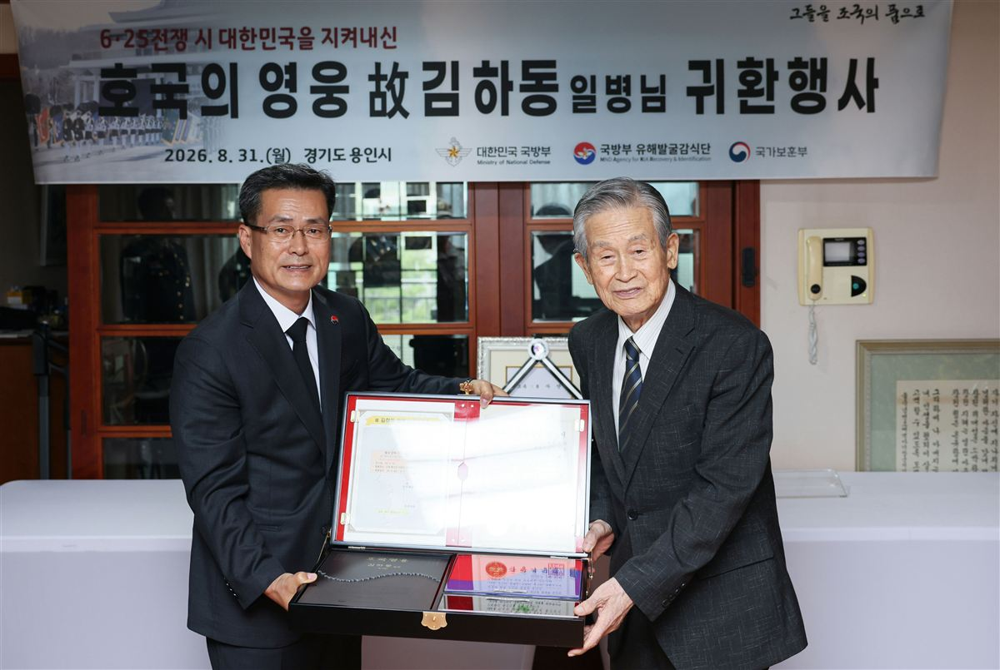

<!doctype html><html lang="ko"><meta charset="utf-8"><title>홈커밍 포털 이미지 원본</title><style>*{box-sizing:border-box}body{margin:0;font-family:'Malgun Gothic',sans-serif;color:#f6f5f0;background:#111716;letter-spacing:-1.5px}.panel{width:1200px;position:relative;overflow:hidden}.brand{font-size:22px;letter-spacing:2px;color:#aab6b2;display:flex;justify-content:space-between}.mint{color:#63c6b9}.cover{height:900px}.cover img{width:1200px;height:650px;object-fit:cover;object-position:center 42%;display:block}.cover .copy{padding:28px 55px}.cover h1{font-size:55px;line-height:1.3;margin:12px 0 0;font-weight:800;letter-spacing:-3px}.timeline{height:1600px;padding:62px 70px}.timeline h1{font-size:67px;line-height:1.25;margin:35px 0 16px;letter-spacing:-4px}.sub{font-size:27px;color:#bbc8c3;line-height:1.6;margin:0}.events{margin:48px 0 0 20px;border-left:2px solid #50625c;padding-left:45px}.event{position:relative;padding:0 0 42px}.event:before{content:'';position:absolute;width:14px;height:14px;background:#63c6b9;border-radius:50%;left:-53px;top:12px}.date{font-size:31px;font-weight:800;color:#63c6b9}.event h2{font-size:34px;margin:10px 0 8px}.event p{font-size:26px;line-height:1.6;color:#cbd2ce;margin:0}.quote{border-top:1px solid #44544e;padding-top:27px;font-size:29px;line-height:1.6}.source{font-size:19px;line-height:1.6;color:#aab6b2;margin-top:20px}</style><section class="panel cover"><div class="copy"><div class="brand"><span>VISUAL NEWSIS · 편집#</span><span>故 김하동 일병</span></div><h1>열아홉에 떠난 형,<br><span class="mint">75년 만에 동생 곁으로</span></h1></div></section>